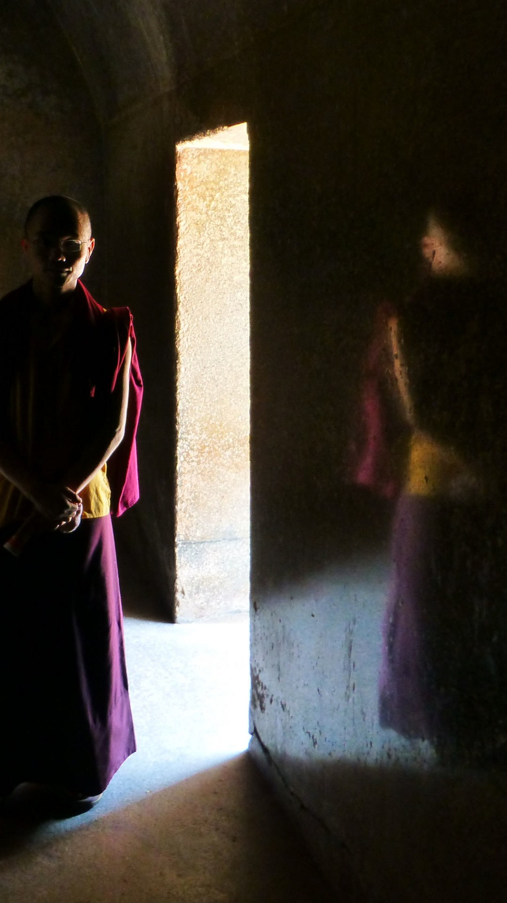

Someone carved the inside of a granite boulder into a room and polished every wall to a mirror finish. You can see your own face reflected back at you right now, standing inside the Barabar Caves in the Jehanabad District of Bihar, India. That room is 2,300 years old. The mirror is still there.
The Archaeological Survey of India administers these chambers. The oldest of them, the Sudama Cave, carries an inscription placing its construction in the reign of Emperor Ashoka, around 252 BCE. The inscription is readable. The mirror finish is intact. Two thousand three hundred years and the surface has not degraded by a measurable degree.

The Surface That Should Not Exist
The granite walls inside Lomas Rishi, Sudama, Karna Chaupar and Vishvakarma Caves carry what geologists classify as an anomalous polish. Granite sits at 6 to 7 on the Mohs hardness scale. The hardest metal tools available to craftspeople in 252 BCE were iron, which tops out at 4.5 on the same scale. A softer material cannot scratch, shape or polish a harder one. That is the first principle of lapidary work, and it has not changed in 2,300 years. Quartz sand, the ancient world's standard abrasive, ranks 7 on Mohs and can abrade granite. Quartz-and-water abrasion leaves a matte surface. Achieving optical reflectivity requires surface uniformity at the nanometer level. Industrial diamond-plate lapping tools achieve that today. The Archaeological Survey of India formally classifies the interior finish as the Mauryan polish and notes in its site documentation that the technique was applied uniformly across the entire chamber interior, including the curved ceiling. A ceiling polished from below. From inside a sealed room. By workers who had to finish every square centimeter before exiting through a doorway less than two feet wide.
The Geometry Is Not Incidental
Sir Alexander Cunningham surveyed Lomas Rishi in 1861 and recorded his findings in the Archaeological Survey of India reports published in 1868. He measured the interior barrel vault at approximately ten feet in height. The interior corners meet at right angles. Not approximately. Right angles, maintained across the full arc of a curved ceiling cut from a single undivided mass of granite. Cunningham noted the complete absence of tool marks on the polished interior surface. Modern laser surveys of comparable hand-polished stone surfaces, including those at Persepolis catalogued by the Oriental Institute at the University of Chicago, consistently show micro-striations from abrasives. The Barabar interior shows none. The polish was applied at a scale and consistency no hand abrasion process produces. Cunningham did not speculate about the method. He recorded the fact and moved on. The fact is still there.
The Acoustic Signature
E.M. Forster visited the Barabar Hills before writing A Passage to India, published in 1924. He placed his fictional Marabar Caves at the center of the novel specifically because of what he heard inside them. A single syllable spoken inside the Lomas Rishi chamber becomes an undifferentiated echo that rings on for seconds. That is not a literary observation. That is a standing wave resonance inside an acoustic chamber built to hold one continuous tone. The barrel vault ceiling, the specific chamber volume and the mirror-polished walls combine to produce it. Acoustic engineers call the deliberate construction of that resonance profile room tuning. Room tuning requires precise control of wall reflectivity, surface texture and chamber geometry simultaneously. Get any one of those variables wrong and the resonance collapses. The Barabar chambers achieve all three inside undivided granite, with no correctable surfaces, no fill material and no adjustable elements. You get the geometry right on the first cut or you get nothing. The chamber has produced the same tone for 2,300 years.
The institution administering the most precisely polished room in the ancient world is on record: the technique was applied by means not definitively established.
What the Mauryan Attribution Actually Explains
The Ashokan inscriptions on the outer face of Sudama and Vishvakarma confirm that the Mauryan Empire ordered the construction. Nobody disputes that. The British Museum holds comparable Ashokan script examples from the Cunningham collection, catalogued and dated. The inscriptions are real and legible. What the Mauryan attribution does not explain is method. Mauryan polish is a name for the phenomenon, not an account of the process. The ASI's own classification acknowledges the technique was achieved by means not definitively established. The institution that administers the most precisely polished interior room surviving from the ancient world is on record stating it does not know how that room was polished. That is not a fringe reading of the evidence. That is the published position of the excavating authority.
The Civilization That Came After
Every major construction tradition that followed the Mauryan period in the Indian subcontinent worked in sandstone. Sandstone is soft. Iron tools can shape it. Hand abrasion can polish it. The Gupta temples, the Pala sculptures, the Mughal inlay work at Agra. All sandstone or marble. Granite work at Barabar precision does not reappear in the subcontinent's architectural record at any point in the following two thousand years. The Mauryan Empire built one generation of these chambers and the technique vanished from the region entirely. No surviving apprenticeship record. No material evidence of the tooling. No parallel examples in any neighboring civilization from the same century. The craftspeople who carved and polished the Barabar Caves left behind rooms that no civilization after them has replicated. What they were doing was not passed forward. It was not rediscovered somewhere else under a different name. It was sealed inside the hill with the chambers and has not come out.
The question is not whether someone polished granite to a mirror finish 2,300 years ago. The mirror is there. Tourists photograph their own reflections in it on their phones in 2026. The question is what kind of knowledge produces a result that two thousand years of subsequent human civilization has not been able to reverse-engineer, replicate or explain by method. Four chambers in the hills of Bihar represent the ceiling of a technology that then vanished from the human record entirely.
Something came before what we have been taught came first. The Barabar Caves are not a puzzle with a missing piece. They are a demonstration. A room that says: this was done, and you cannot explain how, and you cannot do it again. The civilization that left those walls has not been identified. What they knew, and why it stopped with four rooms, is the question nobody in that field is currently funded to answer. Ask yourself why that is.
Before you go
7 books the Vatican doesn't want you reading. Free PDF — the texts they cut, with sources. Joined by 140+ Inner Circle members.
No spam. Unsubscribe anytime.
Go deeper
The Hidden Canon, Vol. I — Enoch. Jubilees. Thomas. Mary. Judas. 90 pages, 14 chapters, every receipt cited. The books your Bible quietly removed.
Read the Canon →Books that informed this investigation
As an Amazon Associate, Hidden Epoch earns from qualifying purchases. Cost to you: nothing.
Research safely
The VPN we use to research without being tracked. First 3 months free.
Get NordVPN →